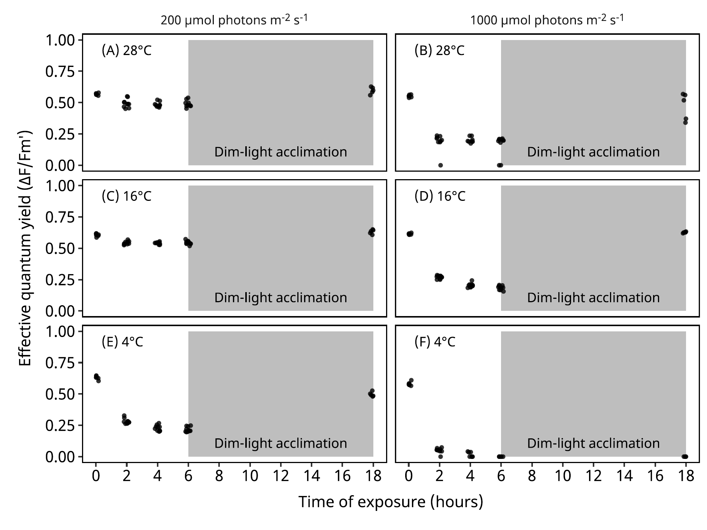
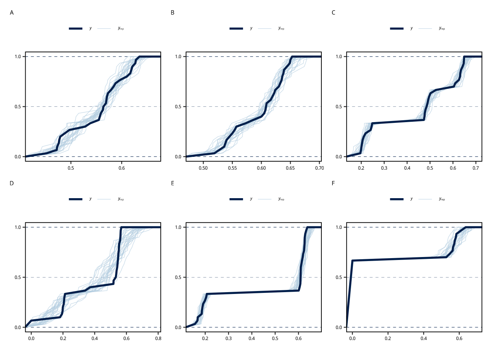
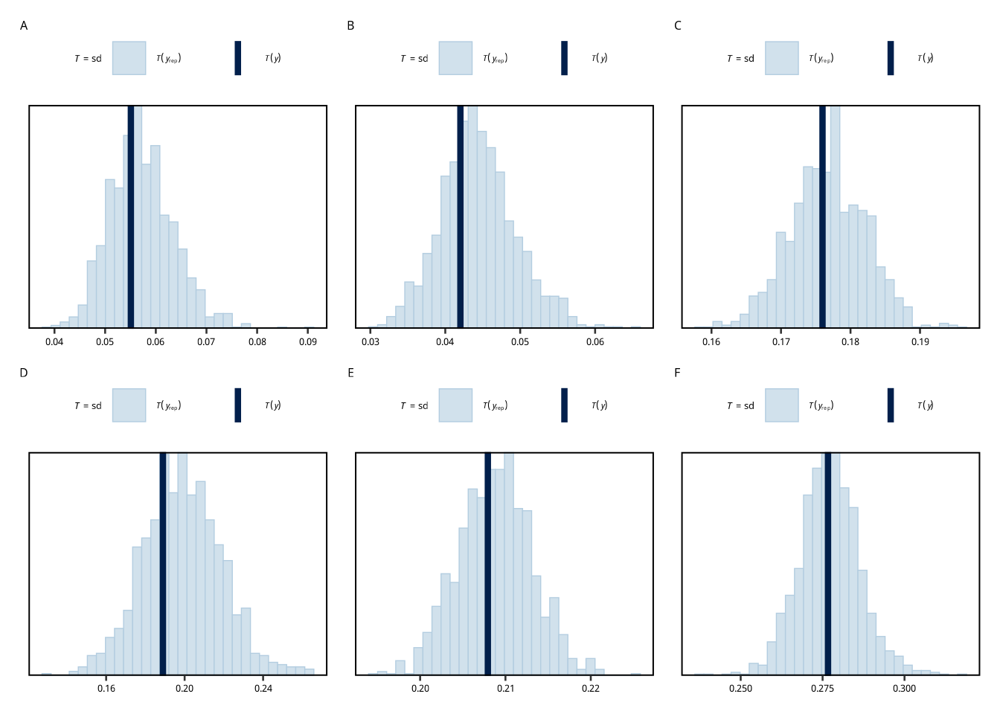
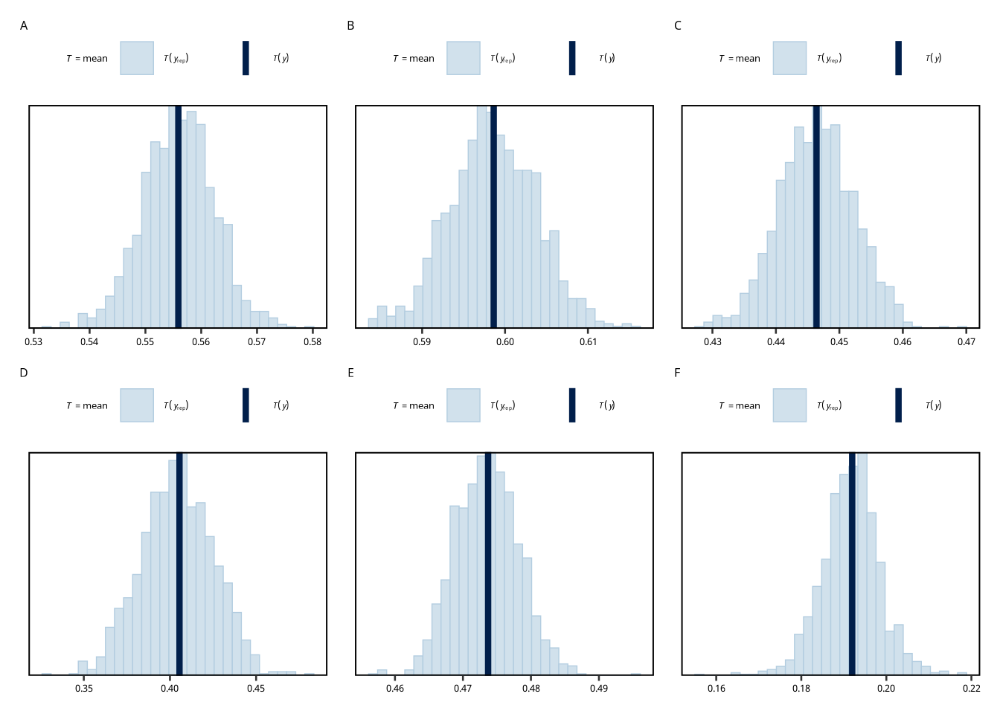

Methods
We analyzed the response variable using an ordered Beta model (Kubinec 2023). This model is specifically designed for continuous data bounded on the interval \([0, 1]\) that includes exact zeros and ones (i.e., \(y \in [0, 1]\)). Zero inflated Beta and zero-one inflated beta models that we have used in the past (Borlongan et al. 2020; Terada et al. 2024) model the zeros and ones as separate Bernoulli processes. The ordered Beta model uses a single latent distribution that is censored at the boundaries, providing a more parsimonious description of the data generation process (Kubinec 2023) and simplied analysis.
The observed data \(y_i\) is assumed to occur from a latent variable \(y^*_i\) which follows a Beta distribution, but with its support extended beyond the standard \((0, 1)\) interval. The support of the latent variable is defined as \([-\kappa, 1 + \kappa]\), where \(\kappa > 0\) is an estimated “exceedance” parameter. The linear predictor of the model (Equation 1) is a function of the predictor (Hours).
\[ \begin{aligned} logit(\mu) &= \beta_h \cdot Hours \\ \tilde{y} &\sim Beta(\mu, \phi) \\ y^* &=\tilde{y} (1 +2\kappa)-\kappa\\ y &= \begin{cases} 0 &\;\text{if}\; y \le 0\\ y^* &\;\text{if}\; 0 < y^* < 1 \\ 1 &\;\text{if}\; y^* \ge 1 \end{cases} \\ \end{aligned} \tag{1}\]
The the model parameters were assigned weakly informative distributions. The regression coefficient \((\beta_h)\) was assigned a Student’s t-distribution with 3 degrees of freedom, a location of 0, and scale of 2.5. The exceedance parameter \((\kappa)\) and precision parameter \((\phi)\) were assigned a gamma prior with a shape and scale of 0.01.
Results
Fig. 1. The hourly response of the effective quantum yield (Δ F/Fm′) in the green alga, Ulva australis from Nagashima Island, Kagoshima, Japan. The experiments were conducted at temperature treatments of (A, B) 28°C, (C, D) 16°C, and (E, F) 4°C crossed with irradiances of (A, C, D) 200 μmol photons m-2 s-1 and (B, D, F) 1000 μmol photons m-2 s-1. The explants were acclimated for 12 hours of dim-light treatment (20 μmol photons m-2 s-1) and exposed to 6 hours of light. The points are jittered horizontally for clarity (n = 10).
Table 1. The mean, standard deviation (Std. Dev.), and standard error (Std. Err.) of the effective quantum yield (ΔFv/Fm′).
| Temperature1 | Irradiance2 | Time of exposure3 | Mean | Std. Dev. | Std. Error | N |
|---|---|---|---|---|---|---|
| 28 | 200 | 0 | 0.569 | 0.010 | 0.003 | 10 |
| 28 | 200 | 2 | 0.494 | 0.034 | 0.011 | 10 |
| 28 | 200 | 4 | 0.483 | 0.020 | 0.006 | 10 |
| 28 | 200 | 6 | 0.489 | 0.027 | 0.008 | 10 |
| 28 | 200 | 18 | 0.610 | 0.024 | 0.007 | 10 |
| 28 | 1000 | 0 | 0.552 | 0.009 | 0.003 | 10 |
| 28 | 1000 | 2 | 0.167 | 0.090 | 0.028 | 10 |
| 28 | 1000 | 4 | 0.161 | 0.087 | 0.028 | 10 |
| 28 | 1000 | 6 | 0.161 | 0.085 | 0.027 | 10 |
| 28 | 1000 | 18 | 0.504 | 0.080 | 0.025 | 10 |
| 16 | 200 | 0 | 0.614 | 0.015 | 0.005 | 10 |
| 16 | 200 | 2 | 0.544 | 0.013 | 0.004 | 10 |
| 16 | 200 | 4 | 0.541 | 0.009 | 0.003 | 10 |
| 16 | 200 | 6 | 0.545 | 0.015 | 0.005 | 10 |
| 16 | 200 | 18 | 0.637 | 0.014 | 0.004 | 10 |
| 16 | 1000 | 0 | 0.612 | 0.007 | 0.002 | 10 |
| 16 | 1000 | 2 | 0.269 | 0.013 | 0.004 | 10 |
| 16 | 1000 | 4 | 0.204 | 0.017 | 0.005 | 10 |
| 16 | 1000 | 6 | 0.185 | 0.017 | 0.005 | 10 |
| 16 | 1000 | 18 | 0.624 | 0.009 | 0.003 | 10 |
| 4 | 200 | 0 | 0.632 | 0.016 | 0.005 | 10 |
| 4 | 200 | 2 | 0.282 | 0.021 | 0.007 | 10 |
| 4 | 200 | 4 | 0.228 | 0.023 | 0.007 | 10 |
| 4 | 200 | 6 | 0.217 | 0.020 | 0.006 | 10 |
| 4 | 200 | 18 | 0.490 | 0.016 | 0.005 | 10 |
| 4 | 1000 | 0 | 0.576 | 0.031 | 0.010 | 10 |
| 4 | 1000 | 2 | 0.045 | 0.025 | 0.008 | 10 |
| 4 | 1000 | 4 | 0.011 | 0.018 | 0.006 | 10 |
| 4 | 1000 | 6 | 0.000 | 0.000 | 0.000 | 10 |
| 4 | 1000 | 18 | 0.000 | 0.000 | 0.000 | 10 |
| (1) °C | ||||||
| (2) μmol photons m-2 s-1 | ||||||
| (3) hours | ||||||
Running MCMC with 5 parallel chains, with 4 thread(s) per chain...
Chain 2 finished in 4.3 seconds.
Chain 4 finished in 4.3 seconds.
Chain 3 finished in 4.4 seconds.
Chain 5 finished in 4.4 seconds.
Chain 1 finished in 5.8 seconds.
All 5 chains finished successfully.
Mean chain execution time: 4.6 seconds.
Total execution time: 6.0 seconds.Running MCMC with 5 parallel chains, with 4 thread(s) per chain...
Chain 1 finished in 4.4 seconds.
Chain 2 finished in 4.3 seconds.
Chain 5 finished in 4.3 seconds.
Chain 4 finished in 4.5 seconds.
Chain 3 finished in 6.9 seconds.
All 5 chains finished successfully.
Mean chain execution time: 4.9 seconds.
Total execution time: 7.0 seconds.Running MCMC with 5 parallel chains, with 4 thread(s) per chain...
Chain 1 finished in 4.4 seconds.
Chain 5 finished in 4.3 seconds.
Chain 3 finished in 4.9 seconds.
Chain 4 finished in 5.2 seconds.
Chain 2 finished in 5.6 seconds.
All 5 chains finished successfully.
Mean chain execution time: 4.9 seconds.
Total execution time: 5.7 seconds.Running MCMC with 5 parallel chains, with 4 thread(s) per chain...
Chain 1 finished in 3.9 seconds.
Chain 2 finished in 4.1 seconds.
Chain 3 finished in 4.0 seconds.
Chain 5 finished in 4.1 seconds.
Chain 4 finished in 4.3 seconds.
All 5 chains finished successfully.
Mean chain execution time: 4.1 seconds.
Total execution time: 4.5 seconds.Running MCMC with 5 parallel chains, with 4 thread(s) per chain...
Chain 3 finished in 4.2 seconds.
Chain 4 finished in 4.2 seconds.
Chain 2 finished in 4.4 seconds.
Chain 5 finished in 4.7 seconds.
Chain 1 finished in 6.0 seconds.
All 5 chains finished successfully.
Mean chain execution time: 4.7 seconds.
Total execution time: 6.1 seconds.Running MCMC with 5 parallel chains, with 4 thread(s) per chain...
Chain 3 finished in 3.2 seconds.
Chain 1 finished in 3.5 seconds.
Chain 4 finished in 3.5 seconds.
Chain 5 finished in 3.6 seconds.
Chain 2 finished in 3.8 seconds.
All 5 chains finished successfully.
Mean chain execution time: 3.5 seconds.
Total execution time: 3.9 seconds.Running MCMC with 5 parallel chains, with 4 thread(s) per chain...
Chain 2 finished in 5.0 seconds.
Chain 1 finished in 5.1 seconds.
Chain 3 finished in 5.0 seconds.
Chain 5 finished in 5.1 seconds.
Chain 4 finished in 5.3 seconds.
All 5 chains finished successfully.
Mean chain execution time: 5.1 seconds.
Total execution time: 5.5 seconds.Running MCMC with 5 parallel chains, with 4 thread(s) per chain...
Chain 1 finished in 5.0 seconds.
Chain 5 finished in 5.2 seconds.
Chain 2 finished in 5.5 seconds.
Chain 3 finished in 5.5 seconds.
Chain 4 finished in 7.3 seconds.
All 5 chains finished successfully.
Mean chain execution time: 5.7 seconds.
Total execution time: 7.5 seconds.Running MCMC with 5 parallel chains, with 4 thread(s) per chain...
Chain 2 finished in 5.0 seconds.
Chain 5 finished in 5.1 seconds.
Chain 1 finished in 5.3 seconds.
Chain 3 finished in 5.2 seconds.
Chain 4 finished in 5.2 seconds.
All 5 chains finished successfully.
Mean chain execution time: 5.2 seconds.
Total execution time: 5.4 seconds.Running MCMC with 5 parallel chains, with 4 thread(s) per chain...
Chain 3 finished in 4.8 seconds.
Chain 1 finished in 5.0 seconds.
Chain 2 finished in 5.0 seconds.
Chain 5 finished in 4.9 seconds.
Chain 4 finished in 5.2 seconds.
All 5 chains finished successfully.
Mean chain execution time: 5.0 seconds.
Total execution time: 5.4 seconds.Running MCMC with 5 parallel chains, with 4 thread(s) per chain...
Chain 3 finished in 5.0 seconds.
Chain 1 finished in 5.3 seconds.
Chain 4 finished in 5.6 seconds.
Chain 2 finished in 5.8 seconds.
Chain 5 finished in 5.8 seconds.
All 5 chains finished successfully.
Mean chain execution time: 5.5 seconds.
Total execution time: 6.0 seconds.Running MCMC with 5 parallel chains, with 4 thread(s) per chain...
Chain 1 finished in 4.3 seconds.
Chain 4 finished in 4.2 seconds.
Chain 5 finished in 4.1 seconds.
Chain 2 finished in 4.3 seconds.
Chain 3 finished in 4.3 seconds.
All 5 chains finished successfully.
Mean chain execution time: 4.2 seconds.
Total execution time: 4.5 seconds.Table 2. Multiple comparisons analysis of the difference in effective quantum yield. The median effect and the 95% highest density credible interval (HDCI) is on the logit scale. PD is the Probability of Direction, which is an index of the proportion of the posterior distribution that is in the direction of the sign of the median effect and ranges for 0.5 to 1. Pr. ROPE is the probability that 100% of the posterior distribution falls within the Region of Practical Equivalence (ROPE). ROPE ranges from 0 to 1, and if the Pr. ROPE is above 97.5% than there is a high likelihood that the posterior distribution of the effect falls completely within the ROPE. If the Pr. ROPE is below 2.5% then there is a high likelihood that the postererior distribution of the effect is not in side the ROPE. the 100% HDCI is within the region of practical equivalence (ROPE) and ranges from 0 to 1.
| Irradiance1 | Temperature2 | Contrast | Median effect3 | 95% HDCI3,4 | PD5 | Pr. ROPE6 |
|---|---|---|---|---|---|---|
| 200 | 4 | 0 hrs - 6 hrs | 1.823 | 1.728 to 1.922 | 1.000 | < 0.001 |
| 200 | 4 | 0 hrs - 18 hrs | 0.583 | 0.502 to 0.670 | 1.000 | < 0.001 |
| 200 | 4 | 6 hrs - 18 hrs | −1.239 | -1.339 to -1.146 | 1.000 | < 0.001 |
| 200 | 16 | 0 hrs - 6 hrs | 0.282 | 0.213 to 0.353 | 1.000 | 0.004 |
| 200 | 16 | 0 hrs - 18 hrs | −0.097 | -0.168 to -0.026 | 0.992 | 0.992 |
| 200 | 16 | 6 hrs - 18 hrs | −0.379 | -0.455 to -0.307 | 1.000 | < 0.001 |
| 200 | 28 | 0 hrs - 6 hrs | 0.319 | 0.228 to 0.413 | 1.000 | 0.002 |
| 200 | 28 | 0 hrs - 18 hrs | −0.173 | -0.261 to -0.077 | 1.000 | 0.577 |
| 200 | 28 | 6 hrs - 18 hrs | −0.491 | -0.588 to -0.398 | 1.000 | < 0.001 |
| 1000 | 4 | 0 hrs - 6 hrs | 7.507 | 2.607 to 27.221 | 1.000 | < 0.001 |
| 1000 | 4 | 0 hrs - 18 hrs | 7.212 | 2.543 to 26.986 | 1.000 | < 0.001 |
| 1000 | 4 | 6 hrs - 18 hrs | −0.272 | -12.381 to 13.765 | 0.537 | 0.051 |
| 1000 | 16 | 0 hrs - 6 hrs | 1.938 | 1.857 to 2.022 | 1.000 | < 0.001 |
| 1000 | 16 | 0 hrs - 18 hrs | −0.053 | -0.129 to 0.022 | 0.928 | 0.999 |
| 1000 | 16 | 6 hrs - 18 hrs | −1.992 | -2.074 to -1.913 | 1.000 | < 0.001 |
| 1000 | 28 | 0 hrs - 6 hrs | 1.072 | 0.621 to 1.637 | 1.000 | < 0.001 |
| 1000 | 28 | 0 hrs - 18 hrs | 0.120 | -0.071 to 0.338 | 0.889 | 0.725 |
| 1000 | 28 | 6 hrs - 18 hrs | −0.950 | -1.492 to -0.537 | 1.000 | < 0.001 |
| (1) μmol photons m-2 s-1 | ||||||
| (2) °C | ||||||
| (3) On the logit scale | ||||||
| (4) 95% highest density credible interval | ||||||
| (5) Probability of direction | ||||||
| (6) Probability of being within the region of practical equivalence | ||||||
We evaluated pairwise differences in the effective quantum yield between exposure times (0, 6, and 18 hours) across distinct experimental conditions defined by irradiance and temperature. Posterior contrasts of the effective quantum yield revealed that the relationship between exposure times varied substantially depending on the thermal and light environment. Specifically, the difference between the 0-hour and 6-hour time points was consistently positive across all conditions (PD > 0.999), indicating a reduction in the (effective) quantum yield at 6 hours relative to the start. However, the subsequent recovery or difference at 18 hours appeared highly dependent on temperature.
In the low-temperature treatment (4°C), we observed distinct temporal dynamics. At high irradiance (1000 μmol photons m-2 s-1), the quantum yields on the logit scale were higher at both 6 hours (median difference = 7.51, 95%HDCI [2.61, 27.22]) and 18 hours (median difference = 7.21, 95% HDCI [2.54, 26.99]) when compared to the initial time point at 0 hours. Notably, at this high irradiance, the difference between 6 and 18 hours was uncertain (PD = 0.54) and the credible interval was wide, amd included zero. Conversely, at low irradiance (200 μmol photons m-2 s-1), all three time points remained distinct, with a clear decline from 0 to 6 hours followed by a partial increase from 6 to 18 hours (median difference = -1.24, PD = 1.00).
In warmer conditions (16°C and 28°C), a pattern of “practical equivalence” emerged between the start (0 hours) and end (18 hours) of the cycle, particularly under high light. For example, at 16°C and 1000 μmol photons m-2 s-1, while the drop from 0 to 6 hours was clear (median difference = 1.94, PD = 1.00), the difference between 0 and 18 hours was negligible (-0.053, Pr. ROPE = 0.999). When the Pr. ROPE of the effect between 0 hrs and 18 hrs is large, the quantum yield most likely returned to initial values. A similar trend was observed at 28°C; despite strong differences between 0 vs. 6 hours and 6 vs. 18 hours (PD = 1.00 for both), the magnitude of difference between 0 and 18 hours was small (median difference = 0.12) with a high probability of being practically negligible (Pr. ROPE = 0.73).
PD と Pr. ROPE について
Some papers that discuss the concept of the region of practical equivalence (ROPE) and the probability of direction (PD) are Kruschke (2021), Anderson, Burnham, and Thompson (2000), Ortega and Navarrete (2017), Kruschke (2015), Kruschke and Liddell (2017), and Kruschke (2013).
Probability of Direction (PD) と Probability of ROPE の概念です。
1. Probability of Direction (PD): 方向性の確率
「効果がプラス（またはマイナス）である確率は何％か？」
- 定義: 事後分布（推定されたパラメータの分布）のうち、符号が「中央値と同じ方向」にある割合です。つまり、効果が「正」または「負」であるという確信度を表します。
- P値との関係: 頻度論の P値と非常に強い相関があります。P値が「帰無仮説が正しいとした場合に極端なデータが得られる確率」であるのに対し、PDは「効果が存在する（ゼロではない）確率」に近いです。
- PD 97.5% は、両側検定の P値 0.05 に相当します。
- PD 99.5% は、P値 0.01 に相当します。
- PDが 1.00 (100%) に近いほど、その効果が偶然ではなく、確実に特定の方向（増加または減少）に働いていることを示します。
2. Probability of ROPE: 実質的等価領域の確率
「その効果は、実質的に『ゼロ』とみなせるか？」
- ROPE (Region of Practical Equivalence) とは: 「効果が完全にゼロ」であることは稀ですが、「科学的・実用的に意味がないほど小さい（ほぼゼロ）」範囲は存在します。この範囲（例: -0.1 から 0.1 の間）を ROPE と呼びます。
- 確率の意味: 事後分布の何％がこの ROPE の範囲内に収まっているかを示します。
- 解釈:
- Pr. ROPE が高い（例: > 0.95）: 推定された効果のほとんどが「意味のない範囲」に入っています。「実質的に差はない（帰無仮説を支持する）」という結論を積極的に導くことができます。（P値では「差がない」ことを証明するのは難しいですが、ROPEなら可能です）
- Pr. ROPE が低い（例: < 0.025）: 効果の大部分が「意味のない範囲」の外にあります。「実質的な意味を持つ差がある」可能性が高いことを示唆します。
P値を用いた頻度論的解釈との対比まとめ
| 指標 | 問いかけ | 頻度論（P値）での類似概念 |
|---|---|---|
| PD (Probability of Direction) | 「効果がある（ゼロではない）と言えるか？」 | 有意差検定 (NHST) PDが高いほど、P値は低い（有意）。 |
| Pr. ROPE | 「その効果は実質的に意味がある大きさか？」 | 同等性検定 (Equivalence Testing) サンプル数が多すぎて「統計的には有意だが、実用上は意味がない微差」が生じた場合、P値は小さくなりますが、Pr. ROPEは高くなる（差がないと判断できる）ことがあります。 |
論文の結果解釈への応用
- PD = 1.000, Pr. ROPE < 0.001 の場合： 「効果は確実に存在し（PD = 1.00）、かつその大きさは実質的に意味がある（ROPE確率がほぼ 0）。」→ 非常に強い有意な効果。
- PD = 0.992, Pr. ROPE = 0.992 の場合： 「方向性は一定しているように見えるが（PDが高い）、効果の大きさ自体は極めて小さく、実質的には『差がない』とみなせる（ROPE確率が高い）。」→ 統計的に検出されたとしても、科学的に考察できる結果ではない。
帰無仮説検定との比較
NHST（帰無仮説検定）に対する、PD（Probability of Direction）および ROPE（実質的等価領域）の主な優位性は、 「『効果がない（帰無仮説）』ことを積極的に支持できるかどうか」、 そして「実質的な意味（効果の大きさ）」を評価できるかという点にあります。
1. 「証拠がない」のか「無いという証拠」なのか？（NHSTの限界）
NHST（P値）の最大の問題点は、有意差が出なかった場合（）の解釈が曖昧なことです。
- NHSTの場合: 「帰無仮説を棄却できない（Fail to reject）」としか言えません。
- これは、「効果が本当にゼロである」のか、単に「データ不足（パワー不足）で検出できなかっただけ」なのかを区別できません。
- つまり、「証拠がない（Absence of evidence）」ことしか示せず、「無いという証拠（Evidence of absence）」にはなりません。
- ROPEの場合: 「実質的にゼロとみなせる範囲」を定義し、事後分布の大部分がそこに含まれれば、「効果は実質的にゼロである」と積極的に結論づける（帰無仮説を受容する）ことができます。
- これにより、「データは十分にあるが、効果は無視できるほど小さい」という強力な結論を導くことが可能です。
2. 「統計的に有意」vs.「実質的に意味がある」（サンプルの罠）
サンプルサイズ（N）が非常に大きい場合、NHSTには別の問題が発生します。
- NHSTの場合: N が巨大であれば、極めて微細でどうでもいい差であっても、P値は小さくなり「統計的に有意」と判定されてしまいます。これは科学的なミスリードを生む原因となります。
- PD & ROPEの場合:
- PD: 効果の存在確率は高く出ますが（「確かにプラス方向である」）、それだけでは判断しません。
- ROPE: 効果の大きさが ROPE（実質的等価領域）の中に留まっていれば、いくら方向が確実（高PD）でも、「実質的には意味がない（差はない）」と判断できます。これにより、過剰な検定力による「意味のない有意差」をフィルタリングできます。
3. 直感的な理解（定義の明確さ）
- P値（NHST）: 「『もし帰無仮説が正しいとしたら』、今回のようなデータが得られる確率はどれくらいか？」という、条件付き確率の非常に回りくどい概念です。
- PD: 「効果がプラス（またはマイナス）である確率は何％か？」という、私たちが本当に知りたい直接的な確率です。
まとめ
| 特徴 | NHST (P値) | ベイズ流 (PD & ROPE) |
|---|---|---|
| 帰無仮説の扱い | 棄却するか、保留するかのみ。「差がない」ことの証明は不可（悪魔の証明）。 | 「実質的に差がない」ことを確率的に証明（受容）できる。 |
| 有意差が出ない時 | 「データ不足」か「効果なし」か区別不能。 | ROPEを見ることで、「精度不足（不確実）」か「確実に効果なし」かを区別可能。 |
| サンプル数過多 | 微細な差でも「有意」になり、ミスリードしやすい。 | 効果が微細なら ROPE に含まれるため、「実質的な差なし」と正しく判断できる。 |
| 解釈の直感性 | 誤解されやすい（P値を効果の確率と思いがち）。 | 直感的（PD = 効果が存在する確率）。 |
結論として： 論文の Results や Discussion において、「有意差が出なかった」ことを単に報告するのではなく、ROPE を用いて「この結果は、効果が科学的に無視できるレベルであることを示唆している（Accepting the Null）」と論じることができる点が、この手法の最大の強みです。
Model diagnostic plots

Fig. A. The posterior predictive check using the empirical cumulative distribution funcion indicated a good model fit for all of the analyzed data; (A) 200 μmol photons m-2 s-1 28°C, (B) 200 μmol photons m-2 s-1 16°C, (C) 200 μmol photons m-2 s-1 4°C, (D) 1000 μmol photons m-2 s-1 28°C, (E) 1000 μmol photons m-2 s-1 16°C, and (F) 1000 μmol photons m-2 s-1 4°C. The model captures the structure of the data, since the observations (\(y\)) are contained within the distribution of the posterior predictions \(y_{rep}\).

Fig. B. The posterior predictive check of the standard deviation indicated that the standard variation of the posterior predictions were modeled well for all of the analyzed data; (A) 200 μmol photons m-2 s-1 28°C, (B) 200 μmol photons m-2 s-1 16°C, (C) 200 μmol photons m-2 s-1 4°C, (D) 1000 μmol photons m-2 s-1 28°C, (E) 1000 μmol photons m-2 s-1 16°C, and (F) 1000 μmol photons m-2 s-1 4°C. The model captures the standard deviation of the data, since the observations (\(T(y)\)) are contained within the distribution of the posterior predictions \(T(y_{rep})\).

Fig. C. The posterior predictive check of the mean indicated that the mean of the posterior predictions were modeled well for all of the analyzed data; (A) 200 μmol photons m-2 s-1 28°C, (B) 200 μmol photons m-2 s-1 16°C, (C) 200 μmol photons m-2 s-1 4°C, (D) 1000 μmol photons m-2 s-1 28°C, (E) 1000 μmol photons m-2 s-1 16°C, and (F) 1000 μmol photons m-2 s-1 4°C. The model captures the mean of the data, since the observations (\(T(y)\)) are contained within the distribution of the posterior predictions \(T(y_{rep})\).
References
Anderson, David R., Kenneth P. Burnham, and William L. Thompson. 2000. “Null Hypothesis Testing: Problems, Prevalence, and an Alternative.” The Journal of Wildlife Management 64 (4): 912. https://doi.org/10.2307/3803199.
Borlongan, Iris Ann, Ryo Arita, Gregory N. Nishihara, and Ryuta Terada. 2020. “The Effects of Temperature and Irradiance on the Photosynthesis of Two Heteromorphic Life History Stages of Saccharina Japonica (Laminariales) from Japan.” Journal of Applied Phycology 32 (6): 4175–87. https://doi.org/10.1007/s10811-020-02266-2.
Kruschke, John K. 2013. “Bayesian Estimation Supersedes the t Test.” Journal of Experimental Psychology: General 142 (2): 573–603. https://doi.org/10.1037/a0029146.
———. 2015. “JAGS.” In, 193–219. Elsevier. https://doi.org/10.1016/b978-0-12-405888-0.00008-8.
———. 2021. “Bayesian Analysis Reporting Guidelines.” Nature Human Behaviour 5 (10): 1282–91. https://doi.org/10.1038/s41562-021-01177-7.
Kruschke, John K., and Torrin Liddell. 2017. “Bayesian Data Analysis for Newcomers.” http://dx.doi.org/10.31234/osf.io/nqfr5.
Kubinec, Robert. 2023. “Ordered Beta Regression: A Parsimonious, Well-Fitting Model for Continuous Data with Lower and Upper Bounds.” Political Analysis 31 (4): 519–36.
Ortega, Alonso, and Gorka Navarrete. 2017. “Bayesian Hypothesis Testing: An Alternative to Null Hypothesis Significance Testing (NHST) in Psychology and Social Sciences.” In. InTech. https://doi.org/10.5772/intechopen.70230.
Terada, Ryuta, Kyosuke Yoshizato, Kazuma Murakami, and Gregory N. Nishihara. 2024. “Phenology and the Response of Photosynthesis to Irradiance and Temperature Gradient in the Herbal Drug Red Alga, Chondria Armata (Rhodomelaceae, Ceramiales) from Kagoshima, Japan.” Journal of Applied Phycology 36 (4): 2139–52. https://doi.org/10.1007/s10811-024-03250-w.